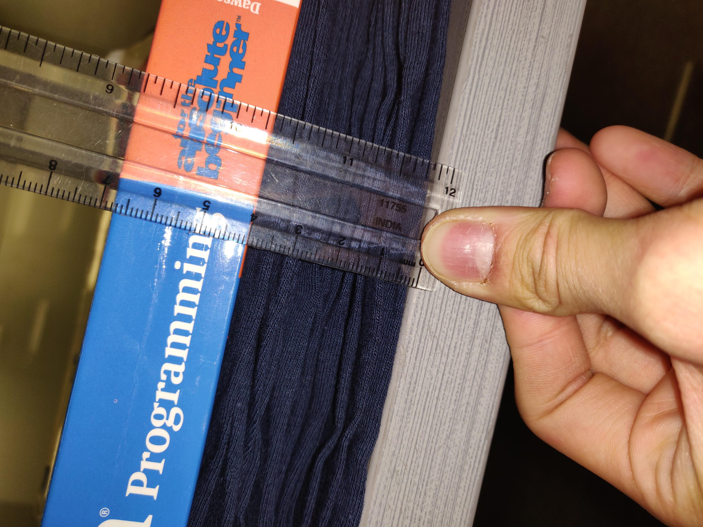

A mole is \( 6.02 \times 10^{23} \) "things." Similar to a dozen, a mole represents the amount of items in a group.
AMU, or the atomic mass unit, is a made up measure of how an atom is weighed. Because protons and neutrons are so simillar in their weight, one AMU is equivilant to one proton or one neutron. Electrons are ignored in this estimate because of how tiny their size is.
Because this was a made up measurement for sake of relative weights, scientists wanted a way to relate this unit to actual scientific calculations. A scientist named Avogadro set out to tackle this problem.
The Carbon-12 atom has an atomic mass of 12 AMUs (6 protons and 6 neutrons). Avogrado set out to calculate how many Carbon-12 atoms were in 12 grams of Carbon-12. Avogadro found that in 12 grams of Carbon-12, there are \( 6.02 \times 10^{23} \) Carbon-12 atoms. This number has come to be known as a mole. In other words:
\[ 12 \text{ grams of Carbon-12 atoms} = 6.02 \times 10^{23} \text{ Carbon-12 atoms} = 1 \text{ mole of Carbon-12 atoms} \]If we had a mole of t-shirts, we'd have quite a lot of shirts. But what exactly is the scale of \( 6.02 \times 10^{23} \) t-shirts?
First, lets see how big a shirt really is.
We piled 32 t-shirts on top of each other to get the thickness of a t-shirt. Using a ruler, the pile was 4 cm tall.
Some quick conversions give us our results:
\[ \frac{4 \text{ cm}}{32 \text{ t-shirts}} = \frac{1}{8} \text{ cm per t-shirt.} \]Let's pose two questions to find how big a mole of shirts really is.
Let's tackle that first one. There is one piece of information we need: how many people there are on Earth. According to the U.S. Census, there are roughly 7.625 billion people on the planet. That's 76.25 billion shirts! That in itself is a lot of shirts, but how much of our job have we completed:
\[ \frac{76.25 \text{ t-shirts}}{6.02 \times 10^{23} \text{ t-shirts in total}} = .000000000013 \text{\% done} \]The question is no longer about if we can complete the job, but how many times over the job can be completed; in other words, to how many Earths full of people can we give give shirts? Let's do some more dimensional analysis:
\[ 1 \text{ mol shirts} \times \frac{6.02 \times 10^{23} \text{ shirts}}{1 \text{ mol shirts}} \times \frac{1 \text{ person}}{10 \text{ shirts}} \times \frac{1 \text{ Earth}}{7.625 \times 10^{9} \text{people}} \approx 7.90 \times 10^{12} \text{ Earths} \]That's almost 8 trillion Earths! To put that into a better perspective, about 1.3 million Earths could fit into the Sun. That's about 6.1 million suns! That's a lot of suns, which means a mole must be pretty big.
Now, let's take a look at that second question again: if every person on each of those Earths were to stack their shirts one on top of another, how tall would a wardrobe to store these shirts have to be?
If we remember our measurements from earlier, we said that 1 cm is the height of 8 shirts. Let's do some math again:
\[ 1 \text{ mol shirts} \times \frac{6.02 \times 10^{23} \text{ shirts}}{1 \text{ mol shirts}} \times \frac{1 \text{ cm}}{8 \text{ shirts}} \times \frac{1 \text{ km}}{1 \times 10^{5} \text{cm}} \approx 7.53 \times 10^{17} \text{ kilometers} \]That's really tall. Putting this into a better perspective, let's think about this relative to Pluto, the farthest planet from the Sun in our solar system, at a distance of \( 5.91 \times 10^{9} \) km. How many one way trips from the Sun to Pluto would need to be taken to cover the same distance that a mole of stacked shirts covers?
\[ \frac{7.53 \times 10^{17} \text{ km shirts}}{5.91 \times 10^{9} \text{ km to Pluto}} \approx 127 \times 10^{8} \text{ one way trips} \]It would take more than 100 million trips from the Sun to Pluto to cover the same distance that the height of the wardrobe would cover, so I wouldn't bank on picking one of these up at IKEA.
The shirts we measured are 100% cotton (fancy, I know). Cotton, however, is not 100% anything but is primarily made up of cellulose. Let's figure out how much a mole of cellulose is .
First, we'll find the molar mass of cellulose. The chemical formula for Cellulose is \(\text{C}_6\text{H}_{10}\text{O}_5\). We need to use the molar masses of each of those elements to get that of cellulose. Here we go:
\[ \begin{aligned} \text{Carbon: } & 12.01 \text{ g/mol} \times 6 = 72.06 \text{ g/mol} \\ \text{Hydrogen: } & 1.01 \text{ g/mol} \times 10 = 10.10 \text{ g/mol} \\ \text{Oxygen: } & 16.00 \text{ g/mol} \times 5 = 80.00 \text{ g/mol} \\ \end{aligned} \] \[ \text{Cellulose: } 72.06 + 10.01 + 80.00 = 162.16 \text{ g/mol} \]Now that we have the molar mass of cellulose, let's find the mass of our shirts. When we are finished with our calculations, we should be able to tell how much of a shirt can be made with a mol of cellulose.
We used the scale in our chemistry lab to weigh three of our shirts.
We can use those weights to find an average shirt weight:
\[ \frac{170.36 \text{g} + 169.68 \text{g} + 156.96 \text{g}}{3} \approx 165.67 \text{g} \]Now that we have our measurements, we can find out how much of shirt can be made with a mole of cellulose. Using our calculation for the molar mass (the grams per mole measurement) of cellulose and the average weight (in grams) of the t-shirts, we get the following:
\[ 1 \text{ mole of cellulose} \times \fraction{162.12 \text{ g cellulose}}{1 \text{ mole cellulose}} \times \fraction{1 \text{shirt}}{165.57 \text{g}} = 0.97881 \text{shirts} \] \[ 1 \text{ mole of cellulose} \times \fraction{162.12 \text{ g cellulose}}{1 \text{ mole cellulose}} \times \fraction{1 \text{ shirt}}{165.57 \text{g}} = 0.97881 \text{ shirts} \]Almost 98% of a shirt is made up of a mol of cellulose. Though it's important to remember that we are generalizing a cotton t-shirt as being made of entirely cellulose, it is crazy to think that a medium-sized cotton t-shirt is made up of about a mole of cellulose!
By now, we hope you can appreciate and start to understand just how big a mole is! It is an extremely practical number in chemistry to help relate a super small (microscopic) thing to a something we can see and comprehend, like a gram.
In case you haven't figured out that a mole is
We hope you've enjoyed learning about the monstrous entity that is a mole, and wish you the best of luck in your chemistry endeavors! Oh, and don't forget-
A Mole is a Unit!
Best Wishes,
Devin and Edward
You can use \(6.02e23\) to enter scientific notation in the calculator.
Let's take a look at another example. NPR says that there is somewhere around \(7.5 \times 10^{18}\) grains of sand on Earth.
That's a lot!
When you go to the beach, it already feels like there's sand everywhere. That doesn't even take into account all the other beaches and deserts and rivers around the world.
Say there's 0 shirts. (This is based on the calculator above)
If each shirt was a grain of sand, you would have roughly 0 Earths of sand.
Here's a visualization, to make things clearer: